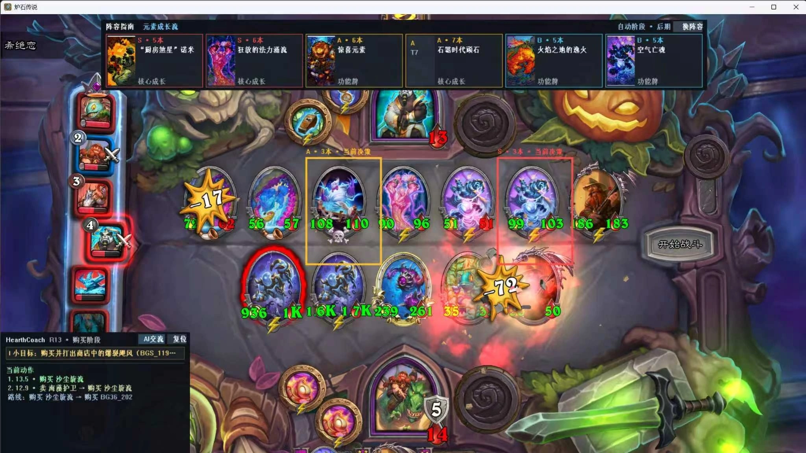
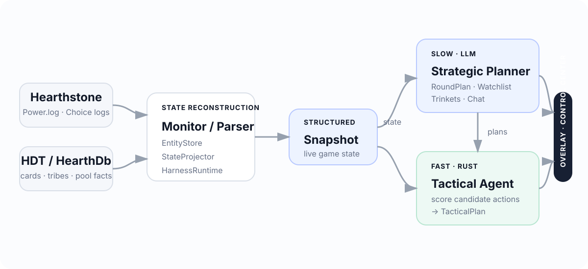
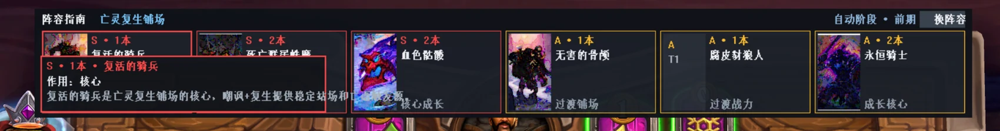
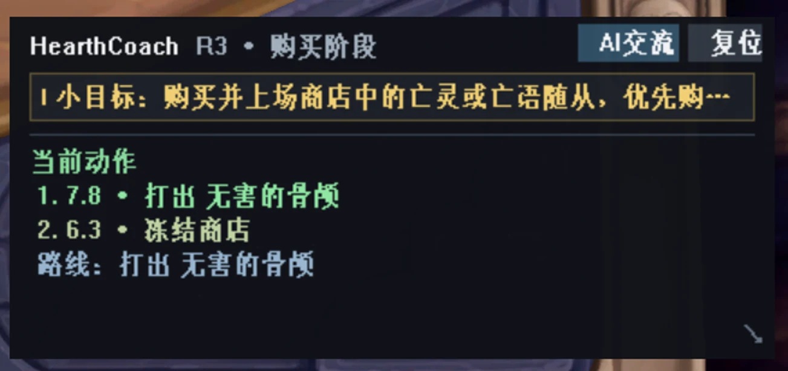
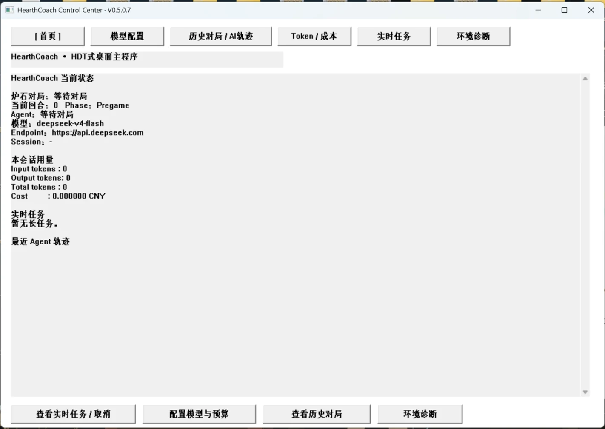
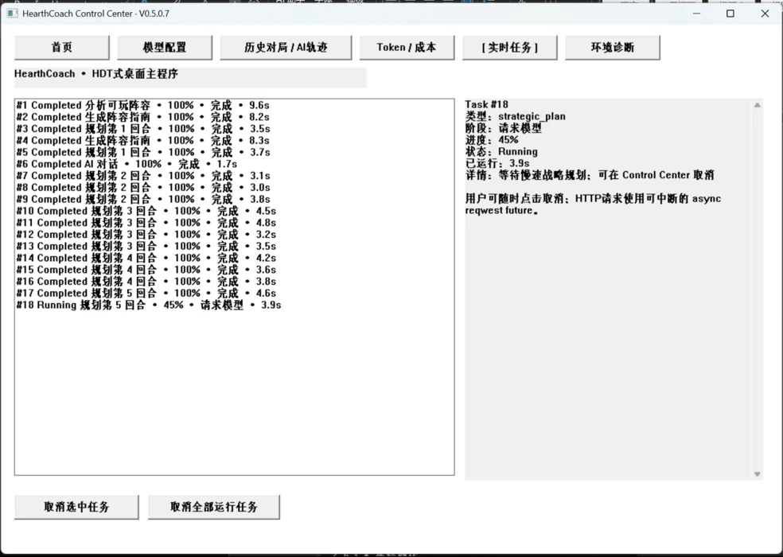
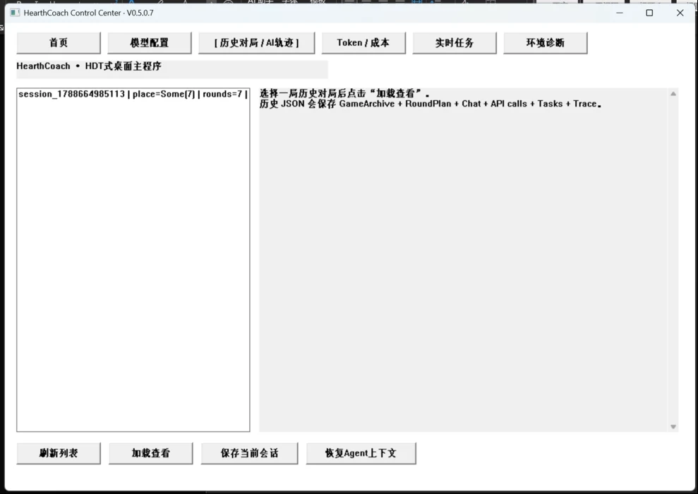

01
Grounded facts
通过 Power.log、HearthDb、HearthMirror 与 CardDefs 获取实时状态和当前卡池信息，不让语言模型自行“猜卡牌事实”。
Real-Time AI Decision Support for Hearthstone Battlegrounds
一个从本地游戏日志实时重建局面，并融合 LLM 长程规划与 Rust 高频战术决策的酒馆战棋辅助系统。

HearthCoach 持续读取 Hearthstone 的本地日志，恢复回合、金币、酒馆等级、手牌、棋盘、商店、对手与 Choice 等状态； 再将低频的战略规划与高频的局面评分拆开，使复杂推理与实时响应能够同时存在。
事实、战略与执行建议分层：HDT/HearthDb 提供卡牌事实，LLM 负责长程战略，Rust 负责校验与实时评分。

通过 Power.log、HearthDb、HearthMirror 与 CardDefs 获取实时状态和当前卡池信息，不让语言模型自行“猜卡牌事实”。
LLM 低频生成可玩阵容、阶段 Watchlist、RoundPlan、饰品规划，并负责可解释的 AI 教练对话。
商店变化时由 Rust 直接结合 Snapshot + RoundPlan + Watchlist 评分 Buy、Play、Upgrade、Refresh、Freeze 等动作。
如果每次刷新商店都调用一次大模型，延迟和成本会让实时辅助失去意义。HearthCoach 因此只让 LLM 在关键节点做慢规划， 把当前回合的目标和关注卡表交给 Rust 快速代理持续执行。
游戏内 Overlay 负责即时提示，Control Center 负责配置、诊断、历史、Agent 轨迹和 AI 对话。





增量解析 Power.log / Choice logs，维护实体状态并投影为可供 Agent 使用的 Snapshot。
利用 HearthDb、HearthMirror 与 CardDefs 获取卡牌属性、当前卡池和本局可用种族。
在商店 revision 变化时快速生成动作候选，无需为每个小决策等待一次模型调用。
游戏外独立绘制 Overlay，可展示卡牌图片、推荐框、行动摘要与当前小目标。
模型配置、环境自检、Power.log 切换、对局记录、Agent 轨迹、API 调用与预算管理集中在一个界面。
Windows Launcher 可检查 Rust、MSVC、HDT 与日志配置，并完成 release 构建与启动。
核心代码按状态恢复、模型编排、战术 Agent、Overlay 与桌面控制中心拆分，并带有 parser/runtime/agent/card catalog 等测试。
src/
├── harness/ # log → entities → snapshot
├── demo/
│ ├── deepseek.rs
│ ├── agent.rs
│ ├── overlay.rs
│ └── control_center.rs
└── bin/
tests/ # parser / runtime / agent / ...
tools/ # bootstrap & HDT helpersHearthCoach 只读取本地日志和卡牌数据，并在游戏进程之外创建辅助界面。它不会注入 Hearthstone 进程， 不会自动点击，也不会替玩家执行买牌、刷新或升级操作。发送给模型 API 的内容仅用于策略分析，API Key 保存在本地配置中。